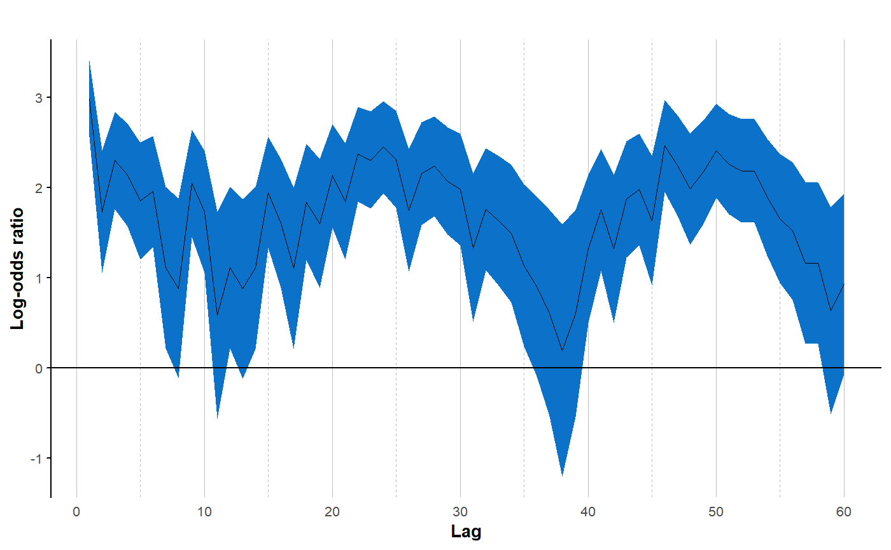

This function calculates a lorelogram for binary data by estimating pairwise log-odds ratios for sampling occasions separated in time or space. The lorelogram depicts pairwise log-odds ratios (y-axis) versus temporal or spatial lag (x-axis) and provides a graphical description of how correlation between outcomes changes as we increase the distance (in space or time) between sampling occasions.
lorelogram(data, data_format = "wide", max_lag = 30, lor_type = "empirical", id_rand_eff = FALSE, lor_adj = FALSE, bin_width = 1, plot_LOR = TRUE, write_csv = FALSE, outDir = "")
| data | data.frame containing a sampling unit identifier, binary outcome, and temporal and spatial units associated with each event. Data can be supplied in wide or long format. See Details section below. |
|---|---|
| data_format | character. Are data organized in "wide" (default) or "long" format? See Details section below. |
| max_lag | numeric. The maximum spatial or temporal lag between two sampling occasions that should be considered when calculating pairwise log-odds ratios (default: 30). |
| lor_type | character. Lorelogram can either be estimated using an "empirical" (default) or (glmm) "model-based" approach. |
| id_rand_eff | logical. Conditional on lor_type = "model-based". Does the model have to include sampling unit ID as random effect (default: FALSE)? |
| lor_adj | logical. Conditional on lor_type = "empirical". If TRUE (default: FALSE), log-odds ratios are calculated using the adjusted formula. See Details section below. |
| bin_width | numeric. Number of lags that should be included in each bin. The default (=1) represents no binning. |
| plot_LOR | logical. Create a plot of the results (default: TRUE)? |
| write_csv | logical. Should the output be saved as a .csv (default: FALSE)? |
| outDir | character. Conditional on write_csv = TRUE. Directory into which .csv file is stored. |
The function returns a data.frame containing estimates of pairwise log-odds ratios and associated 95% confidence intervals for each lag between 1 and max_lag and a plot of the estimates versus lags (when plot_LOR = TRUE).
The lorelogram was defined by Heagerty & Zeger (1998) as a graphical tool to describe correlation in binary data and is based on pairwise log-odds ratios. The lorelogram function calculates empirical lorelograms (but see package's vignette for more details on model-based lorelograms).
Log-odds ratios and 95% confidence interval at each lag \(\Deltat\) are calculated as:
LOR=log[(n11 n00)⁄(n10 n01)]
andCI95% = LOR ± √ (1⁄n11 + 1⁄n11 + 1⁄n11 + 1⁄n11)
where, for example, n11 are the number of 11 pairs (e.g., indicating the species was detected at time t and time t + \(\Deltat\)). The LOR is undefined or equals negative infinity when its denominator or numerator is equal to zero; this corresponds to a gap in the lorelogram at that lag. One possible solution is to add 0.5 to all the counts, replacing n11 with n11+0.5 in both equations (Agresti 1990). This option is available settinglor_adj = TRUE. Another option is to bin the data, aggregating time lags. This can be done through the argument bin_width.
lorelogram can handle NAs in data. In the wide format, rows represent sampling units (e.g., camera trap sites or transects) and columns different sampling occassions (e.g., temporal occasions or spatial replicates). data should resemble a binary detection/nondetection history matrix such as that provided by the function camtrapR::detectionHistory. The first column must contain a unique identifier for each sampling unit; each column from the second to the last must contain the binary data and should follow the spatial or temporal order in which the data were collected (e.g., second, third, and fourth columns should contain data from the first, second, third sampling replicates and so on). If unequal intervals are present in the data, gaps should be filled with columns of all NAs, so that differences between two subsequent columns (e.g. second and third) corresponds to 1-unit lag. In the long format, data must be organized in three columns, the first containing the sampling unit identifier, the second listing the temporal or spatial unit of the event, and the last column containing the binary outcome (i.e. either 1 or 0).
For more details on data formatting, binning, and model-based lorelograms, see package vignette.
Agresti, A. 1990. Categorical data analysis. Wiley, New York, New York, USA.
Heagerty, P. J., and S. L. Zeger. 1998. Lorelogram: A regression approach to exploring dependence in longitudinal categorical responses. Journal of the American Statistical Association 93:150--162.
lor_plot provides options for saving and customizing the lorelogram plot.
CompRandFld::EVariogram is another function to calculate lorelograms in R.
#> # A tibble: 60 x 4 #> Lag LORs U_95_CI L_95_CI #> <dbl> <dbl> <dbl> <dbl> #> 1 1 2.99 3.41 2.57 #> 2 2 1.73 2.41 1.05 #> 3 3 2.30 2.84 1.76 #> 4 4 2.14 2.71 1.57 #> 5 5 1.85 2.50 1.21 #> 6 6 1.95 2.57 1.34 #> 7 7 1.12 2.01 0.221 #> 8 8 0.883 1.88 -0.113 #> 9 9 2.05 2.64 1.45 #> 10 10 1.73 2.41 1.06 #> # ... with 50 more rows